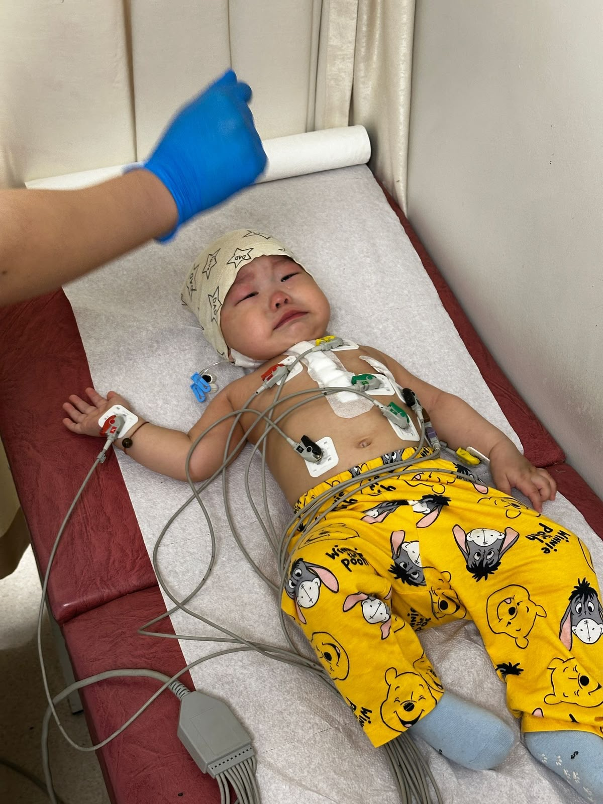
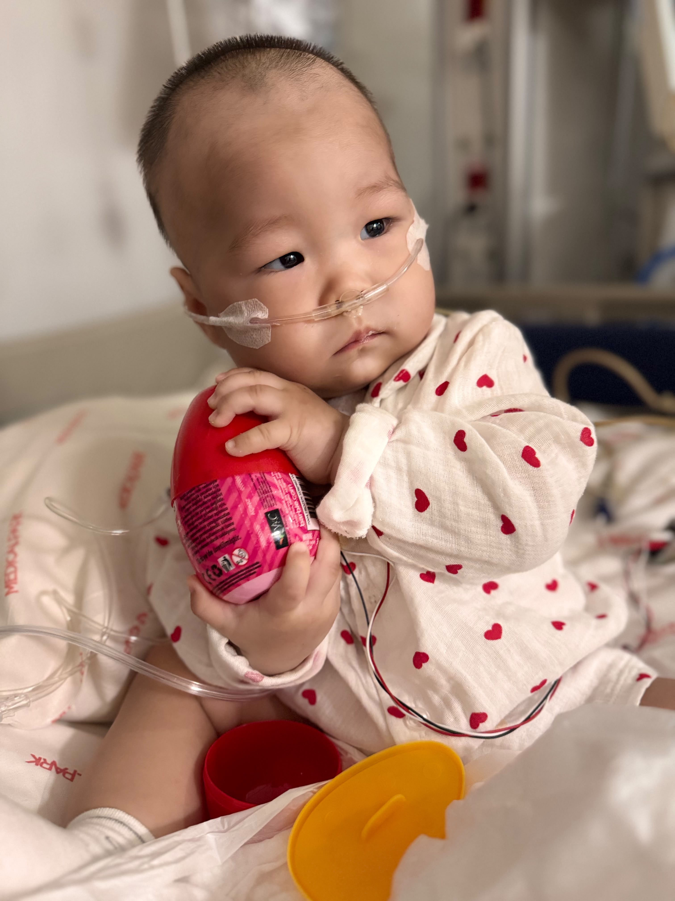
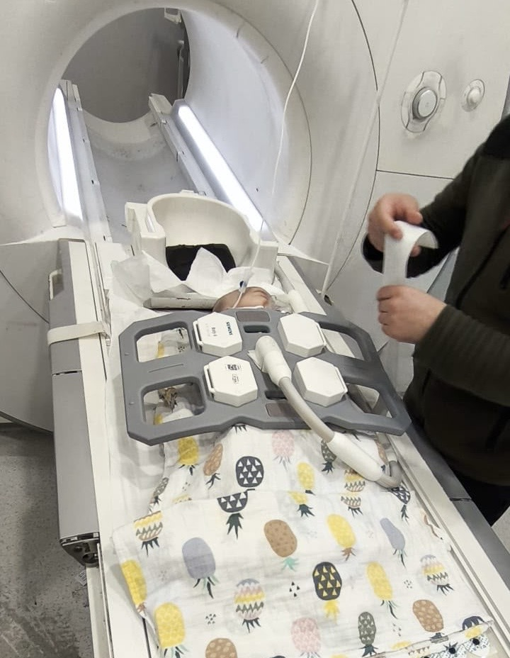

01
Первые симптомы
В три месяца Арыстан начал часто болеть. Врачи лечили пневмонию, и до шести месяцев мы каждую неделю ложились в больницу.


Арыстану срочно нужна повторная операция, чтобы удалить часть опухоли сердца
Әделбай Арыстан Медетұлы · 2 года
0 ₸
на собрано
цель
1 000 000 ₸
Собрано 0% от цели
История
01
В три месяца Арыстан начал часто болеть. Врачи лечили пневмонию, и до шести месяцев мы каждую неделю ложились в больницу.

02
В полгода педиатр посоветовал сделать УЗИ сердца. В конце ноября 2024 года Арыстан провёл 13 дней в реанимации в Талдыкоргане: врачи оценивали шансы 50 на 50. Ещё 20 дней мы лечились в областной больнице.

03
Консилиум кардиохирургов в Алматы отказался оперировать из-за высокого риска. В Астане мы 10 дней обследовались: МРТ сделать не удалось, тип опухоли определить не смогли, и от операции снова отказались. В выписке написали «внезапная остановка сердца».

04
В феврале мы начали сбор, а в апреле 2025 года поехали в Стамбул. Турецкие врачи тоже оценивали шансы 50 на 50. Операция длилась больше 4 часов, но опухоль приросла к клапану, и убрать её полностью не удалось: осталась четверть.

05
После операции мы ездили на платное УЗИ: сначала каждый месяц, затем раз в 3 месяца. Три раза Арыстану переливали кровь. Из-за слабого иммунитета он часто болеет, дополнительно у него выявлена бронхиальная астма.

06
В марте сделали обследование и МРТ, но Арыстан снова заболел, воспалились лёгкие, и операцию отложили. Точную причину не назвали, велели наблюдаться и приехать в 2027 году. Мы попросили направление у врачей Казахстана и подали заявки через портал. В ноябре были на платном приёме в Астане, нам выдали направление на повторное МРТ. Возьмутся ли в Астане за операцию, пока неизвестно.

07
Арыстан пятый ребёнок в семье, у него две старшие сестры и два старших брата. Если в Астане снова откажут, мы готовы не останавливаться на Стамбуле и искать сильную клинику в другой стране, чтобы вылечить его полностью. Спасибо каждому, кто поддерживает нас переводом, репостом или добрым словом.

Состояние требует постоянного наблюдения и лечения
Арыстану нужна повторная операция по удалению оставшейся части опухоли сердца. Клиника, где её проведут, пока не определена: мы ждём заключения врачей.
| Повторная операция по удалению опухоли сердца | 1 000 000 ₸ |
Мы публикуем документы, чтобы каждый мог убедиться в подлинности сбора.
Помочь сейчас
Каждый перевод, даже небольшой, приближает лечение.
Способ оплаты
Kaspi Gold
Номер карты
Номер телефона
Получатель
Kaspi не открылся? Нажмите сюда. Номер телефона скопируется ещё раз.
Пожалуйста, проверьте данные получателя перед переводом.
Прозрачность сбора
Чтобы узнать больше о ситуации Арыстана, посмотреть публикации и связаться с организаторами сбора, перейдите в официальный профиль семьи.
Instagram @help_arystan ↗Деньги направляются непосредственно на указанную карту, а не через этот сайт.
Выписка и заключение врачей доступны в разделе «Документы».
Любая посильная сумма, каждый репост и каждое доброе слово имеют значение. Если вы не можете помочь деньгами, поделитесь историей Арыстана: иногда один репост доходит до того, кто сможет помочь.
Сумма пожертвования
Скопируйте номер карты и сделайте перевод в Kaspi или другом банке.
Сумма перевода:
Способ оплаты
Kaspi Gold
Номер карты
Номер телефона
Получатель
Пожалуйста, проверьте данные получателя перед переводом.